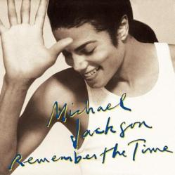

|  |
|
(Lyrics) Do you remember When we fell in love We were young And innocent then Do you remember How it all began It just seemed like heaven So why did it end? Do you remember Back in the fall We’d be together All day long Do you remember Us holding hands In each other’s eyes We’d stare (tell me) Do you remember the time When we fell in love Do you remember the time When we first met Do you remember the time When we fell in love Do you remember the time Do you remember How we used to talk (ya know) We’d stay on the phone At night till dawn Do you remember All the things we said like I love you so I’ll never let you go Do you remember Back in the spring Every morning birds would sing Do you remember Those special times They’ll just go on and on In the back of my mind Do you remember the time When we fell in love Do you remember the time When we first met girl Do you remember the time When we fell in love Do you remember the time Those sweet memories Will always be dear to me And girl no matter what was said I will never forget what we had Now baby Do you remember the time When we fell in love Do you remember the time When we first met Do you remember the time When we fell in love Do you remember the time Do you remember the time When we fell in love Do you remember the time When we first met Do you remember the time When we fell in love Do you remember the time Remember the times, Ooh Remember the times Do you remember girl Remember the times On the phone you and me Remember the times Till dawn, two or three What about us girl Remember the times Do you. do you, do you, Do you, do you Remember the times In the park, on the beach Remember the times You and me in Spain Remember the times What about, what about... Remember the times Ooh... in the park Remember the times After dark..., do you, do you, do you Remember the times Do you, do you, do you, do you Remember the times Yeah yeah Remember the times. |
(Letra en Español) Te acuerdas Cuando nos enamoramos. Eramos jóvenes e Inocentes en ese entonces. Te acuerdas Como empezó todo, Parecía justo como el cielo. Entonces, ¿porqué terminó? Te acuerdas De vuelta en el otoño, Nosotros estábamos juntos Todo el día. Te acuerdas Nuestras manos unidas Nos mirábamos fijamente A los ojos (dime). Te acuerdas de aquel tiempo Cuando nos enamoramos. Te acuerdas de aquel tiempo Cuando nos conocimos por primera vez Te acuerdas de aquel tiempo Cuando nos enamoramos. Te acuerdas de aquel tiempo. Te acuerdas Como solíamos hablar (ya sabes), Nos quedábamos en el teléfono De la noche hasta el amanecer. Te acuerdas Todas las cosas que decíamos, Como te amo tanto, Nunca te dejaré ir Te acuerdas De vuelta en la primavera, Todas los mañanas los pájaros cantaban. Te acuerdas Esos especiales momentos, Ellos solo van y van A la vuelta de mi mente. Te acuerdas de aquel tiempo Cuando nos enamoramos. Te acuerdas de aquel tiempo Cuando nos conocimos por primera vez. Te acuerdas de aquel tiempo Cuando nos enamoramos. Te acuerdas de aquel tiempo... Esas dulces memorias Siempre serán queridas para mí. Nena, no importa lo que se ha dicho, Yo nunca olvidaré lo que tuvimos Ahora nena. Te acuerdas de aquel tiempo Cuando nos enamoramos. Te acuerdas de aquel tiempo Cuando nos conocimos por primera vez. Te acuerdas de aquel tiempo Cuando nos enamoramos. Te acuerdas de aquel tiempo. Te acuerdas de aquel tiempo Cuando nos enamoramos. Te acuerdas de aquel tiempo Cuando nos conocimos por primera vez. Te acuerdas de aquel tiempo Cuando nos enamoramos. Te acuerdas de aquel tiempo. Recuerda las veces, Ooh Recuerda las veces Te acuerdas, nena Recuerda las veces. En el teléfono tu y yo. Recuerda aquel tiempo. Hasta abajo, dos ó tres ¿Qué hay acerca de nosotros, nena? Recuerda aquel tiempo Te, te, te, Te, te, Recuerda aquel tiempo En el parque, en la playa. Recuerda aquel tiempo Tu y yo en españa. Recuerda aquel tiempo Que sobre, que sobre,... Recuerda aquel tiempo Ooh...en el parque Recuerda aquel tiempo Después de la oscuridad..., te, te, te. Recuerda aquel tiempo Te, te, te, te. Recuerda aquel tiempo, Yeah, yeah. Recuerda aquel tiempo... |